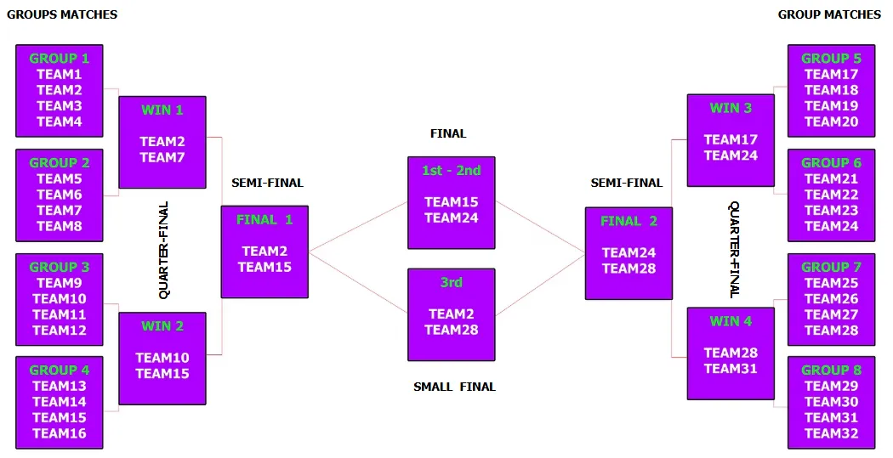

1公斤級摔角原始內容
規則內容
經典摔角 1公斤級
年齡組別
兒童組 (10至12歲 / 國小)
青少年組與青年組 (12歲以上至18歲 / 國中)
成人組 (18歲以上) - 僅限進階組別
本項目分為兩個級別：
👀 請仔細閱讀此處各級別的規格：
基礎組 - 進階組
🚨 各年齡組別分別進行比賽。
⚠️ 第零條規則 – 零容忍原則與常識
在所有運動項目中，均適用第零條規則，其內容如下：
➤「如果您不確定某件事是否被允許，那麼它很可能是不被允許的。」
所有規則皆基於常識、運動精神以及所有參與者的安全。
任何蓄意曲解、違反規則本意，或試圖利用灰色地帶獲取不公平優勢的行為，將不被容忍，並可能導致隊伍被取消比賽資格。
🎯 目標
機器人運動員的目標是在專門設計的摔角賽道上將對手推出場外，並被判定為獲勝者。
每場比賽有 1 分鐘的時間限制。
摔角作為一項運動，不需要傷害或摧毀對手，僅需將其移出賽道即可。這只能透過機器人的主體推動對手來完成，就像兩個真人摔角手比賽一樣。在這種情況下，違反核心價值的機器人運動員將被淘汰，對手將被宣佈為獲勝者。
👥 隊伍 – 教練
- 比賽以隊伍為單位參與，而非個人。
- 每隊可由二 (2) 至三 (3) 名隊員組成。
- 每隊必須指定最多一 (1) 名機器人運動員技師。僅允許機器人運動員技師進入準備區或比賽區域。其餘隊員必須留在比賽場地內，但不得排隊等候。
- 允許隊伍在每次賽道嘗試前更換指定的技師，讓所有隊員都有機會積極參與該項目，但此非強制性。
- 所有隊員必須年滿 10 歲 (相當於國小四年級或以上)。
- 隊伍教練必須年滿 20 歲。
- 為確保比賽順利進行，教練每註冊 3 支隊伍參加比賽，就必須配備 1 名助理。
- 每隊僅允許使用一台機器人。比賽期間不得更換機器人。
- 隊伍之間不得共用同一台機器人。
- 若隊伍的機器人遇到嚴重的技術問題，經主裁判許可後，僅允許更換微控制器或電子元件。
🤖 機器人運動員 – 機器人類別
符合資格的機器人運動員包括基礎型和進階型機器人。
比賽根據以下條件分別進行：
⚙️ 機器人運動員要求 – 規格
- 機器人運動員必須是自主運作的。自主性說明：所有控制、決策和驅動組件必須完全位於機器人內部。嚴禁任何形式的外部控制、人為干預、遠端命令、觸發或間接影響（包括藍牙、Wi-Fi、無線電信號或類似技術）。
- 最大尺寸必須為 寬 20 公分 × 長 20 公分。
- 重量：不超過 1 公斤。
- 機器人運動員將被秤重，並且必須能舒適地放入檢測箱中。
- 檢測箱尺寸為 20 × 20 公分，另有正負二 (2) 公釐的公差。
- 機器人運動員應在不施加壓力的情況下放入檢測箱。
- 機器人運動員不得磨損或損壞賽道，或以任何方式對觀眾構成威脅。
- 機器人運動員必須配備啟動和停止按鈕。➤ 在摔角進階組中，運動員應配備 MicroStart Module Jsumo。
- 啟動/停止強制執行：若啟動/停止系統在技術檢查期間無法正常運作，則該機器人運動員不允許參賽。若機器人運動員在裁判指示時未能停止：- 若它離開競賽場地，該回合判輸。- 若它繼續在競賽場地內移動，該場比賽判輸。
- 基礎組適用以下限制：僅可使用一 (1) 個微控制器、四 (4) 個馬達和四 (4) 個感測器。
- 摔角進階組對微處理器和感測器的使用沒有限制。
- 任何機器人類別均禁止使用氣動裝置/設備。
- 在基礎組中，僅允許使用教育套件提供的官方電池/電源。禁止使用改裝的電池、馬達和感測器。
- 嚴格禁止使用外部電池、升壓器、轉換器、馬達驅動器來提高超過官方主機額定電壓的電壓。這些主機的標稱電壓最高不得超過 9V。
- 摔角進階組可使用任何類型的電池或電源，機器人任何電路或部件的標稱電壓上限為 24V。禁止使用標稱電壓大於二十四 (24) 伏特的電壓。
- 任何機器人類別均嚴格禁止使用回力馬達，因為本項目鼓勵工程技術和實驗以提升速度。
- 禁止使用氣體（例如氣瓶或任何等效物）來提高速度和力量，因為它們被認為是危險的。
🧱🛡️ 3D列印／結構零件 – 護盾與延伸（兩個級別皆適用）
- 允許機器人運動員包含 3D 列印零件或其他結構材料，用於前方、後方和/或側面的防護護盾和延伸。
- 比賽開始時，機器人運動員必須完全放入官方檢測箱內（20 × 20 公分，公差 ±2 公釐）。
- 比賽開始後，機器人運動員可向前、向後和/或向側面擴展，但在所有方向完全伸展時，最大整體尺寸不得超過 30 × 30 × 30 公分。
- 護盾和延伸可以是機械式或可展開式（例如，在比賽開始後降低、展開或打開）。
- 護盾和延伸不得為白色，以避免干擾競賽場地線條標記和感測器。
- 1 公斤的重量限制仍然有效，包括所有護盾、延伸和附加零件。
- 延伸／護盾必須僅由塑膠材料製成。
- 若使用旗幟，允許使用任何顏色的紙張和布料。機器人運動員含旗幟垂直放置時的總高度不得超過 25 公分。
- 所有護盾和延伸必須安全：無尖銳邊緣、無危險零件，且無任何會損壞或磨損競賽場地表面的元件。
- 3D 列印零件、護盾和延伸不得為白色或淺色，以避免與競賽場地邊界線混淆，並防止干擾感測器和裁判視線。
- 若在比賽開始後，裁判判定機器人運動員不符合規則中規定的規格，裁判有權取消該隊伍的該項目資格。
- 機器人運動員在整場比賽中必須保持為單一、統一的機器人。嚴禁在比賽期間物理分離、故意脫落或將機器人分解成碎片。若非必要零件意外脫落，機器人必須在沒有該零件的情況下繼續比賽。比賽期間不允許進行維修。
🧪 技術檢查
- 初次技術檢查於比賽當日，在機器人運動員第一次嘗試時進行。
- 在初次檢查期間，將詢問隊伍關於機器人程式的關鍵部分。➤ 隊伍必須打開裝有機器人程式的筆記型電腦。➤ 若從回答中明顯看出隊伍不理解程式，他們將受到相當於其在該項目中所得分數 -20% 的罰則。
- 技術檢查包括根據上述規格進行的機器人檢查。➤ 若機器人未達要求，將不允許其參賽，並自動取消其在该項目的資格。
- 初次檢查完成後，機器人運動員將被分配一個唯一的 ID 編碼。
- 若隊伍在初次技術檢查時未到場，將導致自動取消比賽資格。
- 在每次嘗試前，助理裁判也會進行二次技術檢查。
- 若在比賽過程中，裁判判定機器人運動員違反或未達規定之規格，裁判有權立即取消其資格。
🏟️ 競賽場地
1. 競賽場地為圓形，直徑 80 公分，離地高度 1 公分。
2. 其材質為黑色木材（塗有霧面漆）。
3. 周邊有 2.5 公分厚的白色塗漆邊框。
4. 競賽場地放置在桌子上。
margin: 30px 0; text-align: center;">

小組賽制度
小組內隊伍間比賽範例
⚙️ 比賽準備 - 限制
🤖 進階組機器人運動員
- 在競賽場地中央放置一個「X」標記，標示選手的機器人擺放區域。裁判負責分配機器人擺放的象限。
- 裁判發出將機器人運動員放入競賽場地的信號。
- 機器人運動員技師應同時將他們的運動員放入競賽場地。
- 當機器人運動員放入後，裁判將從競賽場地中移除十字標記。
- 一旦放置，機器人運動員不得移動。
- 裁判將機器人運動員連接到其控制器，以便同時啟動。
- 在裁判信號下，機器人運動員技師應至少向後退一步，遠離競賽場地。
- 裁判倒數 3、2、1 並啟動機器人運動員。
🔰 基礎組機器人運動員
- 對於基礎組機器人運動員，裁判在競賽場地中央、兩台機器人運動員之間放置一個黑色框架（例如紙板）。
- 黑色框架將競賽場地分成四個相等的部分。機器人運動員必須放置在兩個區塊中。
- 技師將他們的機器人運動員放置在各自區塊中的任何位置。每台機器人運動員必須至少部分覆蓋白線／圓環。
- 機器人運動員必須能看到黑色框架，且在裁判將其移走之前不得進行任何移動。
- 裁判指示技師按下機器人運動員上的啟動按鈕，使機器人運動員進入待命狀態。
- 按下按鈕後，技師應遠離競賽場地至少一步以確保安全。
- 裁判倒數 3、2、1，開始，並升起黑色框架。
- 機器人運動員應在裁判升起框架的瞬間立即開始移動。
- 若機器人運動員在 5 秒內未開始移動，則視為輸掉該場比賽，勝利判給對手。
機器人運動員在競賽場地中的擺放
黑色框架系統啟動
🔢 積分
3️⃣ 每場勝利獲得 3 分。
0️⃣ 若平手，不給分 — 裁判立即宣布一場淘汰賽以決定勝負。
0️⃣ 每場敗仗得 0 分。
🏆 小組賽：
- ✅ 各組中得分最高的機器人運動員晉級四分之一決賽。
- 若 2 名或以上機器人運動員積分相同，則敗場數最少的機器人運動員晉級下一階段。
- 若仍平手，則裁判宣布一場淘汰賽。該場比賽的獲勝者晉級下一階段。
- 若該場比賽平手，則繼續進行淘汰賽，直到產生獲勝者。
🏆 四分之一決賽、半決賽、季軍賽和決賽：
- ✅ 得分最高的機器人運動員晉級下一輪。
- 若 2 名或以上機器人運動員積分相同，則敗場數最少的機器人運動員晉級下一階段。
- 若仍平手，則裁判宣布一場淘汰賽。該場比賽的獲勝者晉級下一階段。
- 若該場比賽平手，則繼續進行淘汰賽，直到產生獲勝者。
⏱️ 技師更換時間
在小組賽的回合之間，每隊將給予 1 分鐘時間。在這分鐘內，若隊伍願意，可以更換技師。若新技師在 1 分鐘內未到場，則由原技師繼續參加下一回合。
⚠️ 警告！
若機器人運動員未在指定區域，或其技師在比賽指定時間未在場，該隊將輸掉比賽，勝利判給對手。
🟥 隊伍取消資格
在以下情況下，隊伍將被取消比賽資格並必須退出：➤ 隊伍的成績將不予計算，也不會出現在官方比賽排名中。
- 若機器人運動員不符合運動規則中定義的規格，且隊伍拒絕進行必要的調整。
- 若任何技師行為不當或不尊重他人，使用侮辱性語言、挑釁，或對其他參與者或裁判進行口頭（或其他方式）攻擊。
- 若發現機器人運動員並非自主運作，而是透過藍牙、Wi-Fi 或任何類似技術進行遠端控制。
- 若機器人運動員的技師故意傷害對手機器人運動員。
✅ 允許 / ❌ 禁止
✅ 允許：
- 僅使用濕清潔布或清潔液和紙巾清潔機器人運動員的車輪。
- 比賽開始後機器人運動員的自主擴展。
- 使用濕清潔布或清潔液和紙巾清潔車輪。
❌ 禁止：
- 機器人運動員使用可能傷害對手的零件。
- 使用黏著劑（使用膠帶清潔車輪：焊接用、電氣用、包裝用膠帶，可能會在車輪上留下殘膠或吸盤）來增加附著力。
- 與擂台接觸的輪胎和機器人其他部件，必須不能夠舉起並承載標準 A4 紙（80 g/m²）超過兩秒鐘。
- 增加下壓力的裝置，如真空幫浦和磁鐵，僅允許在超級摔角項目中使用。
- 比賽期間將機器人運動員分解成碎片以迷惑對手。
- 在機器人結構中使用線、細繩、繩索或任何種類的繩子，以避免被對手的動作困住。
- 遠端控制。
- 機器人在比賽期間連接到（藍牙、wifi 等）電腦、手機和任何其他電子設備。若發生此情況，該隊將被永久禁止參加該項目，裁判將勝利判給對手隊伍。
- 使用氣動裝置。
- 在任何運動項目中使用回力馬達。
- 使用全向輪。
- 機器人運動員上的護盾或延伸為白色。
- 使用任何可能阻止機器人運動員感測器偵測對手或故意干擾／阻礙其使用的裝置或材料。
- 禁止使用增加下壓力的裝置。
- 刮傷或損壞競賽場地油漆，長度超過三 (3) 公分或寬度／深度超過兩 (2) 公釐，視為嚴重犯規。正常的推擠和碰撞造成的表面磨損不在此限。裁判關於損壞測量和分類的決定為最終決定。
⚠️ 異議
裁判的決定不接受隊伍異議。若有分歧或相反意見，裁判與主裁判和組委會合作擁有最終決定權。
🏆 獲勝者
在該項目結束時，將分別為每個年齡組別以及摔角基礎組和摔角進階組宣布獲勝者：
🥇 第一名 🥈 第二名 🥉 第三名
🏁 排名根據機器人運動員獲得的積分決定。
聯繫我們：
+30 6940 411020
mrc@he-ro.gr
+30 6940 411020
希臘克里特島伊拉克利翁
追蹤我們：
由希臘教育機器人組織創建。2023 保留所有權利。
基礎組 - 進階組
基礎組 – 機器人規格
基礎組的機器人運動員必須完全由教育機器人套件建造，無論是原廠或相容（非原廠）的，基於模組化積木/梁柱系統（或類似系統），且必須使用專為該系統設計的整合式教育控制器/主機。
代表性系統包括：LEGO® Education（EV3、SPIKE、Robot Inventor、NXT）、ZMROBO、MAKERZOID、ENJOY AI、Makeblock mBot、DFRobot Maqueen 及類似教育套件。
機器人必須明顯保持教育機器人套件的結構、理念和架構，且不得演變為開放或客製化電子平台。
1. 控制器 / 主機
必須使用套件的教育控制器/主機。
若為已停產的系統（例如 LEGO EV3、LEGO NXT），允許使用相同類型的原廠或完全相容（第三方）主機/控制器，前提是：
- 它們保持等效的技術和功能規格。
- 它們未經內部或外部修改、增強，或超出製造商預期功能進行重新編程。
嚴禁添加外部微控制器（例如 Arduino、ESP32、Raspberry Pi 等）、客製化控制板、可程式化擴充單元或任何獨立的電子控制系統。
機器人的控制架構必須保持為封閉式教育套件的架構。
2. 馬達 – 感測器 – 電纜
所有馬達和感測器必須透過被動式電纜/轉接器連接到主機/控制器，這些電纜/轉接器：
- 不含電子電路，且
- 不改變電壓、電流、訊號類型、頻率、通訊協定或電源特性。
不得在主機與任何馬達或感測器之間插入主動式電子裝置。
就本規定而言，主動式電子裝置（或主動式轉換器）定義為任何在主機與馬達/感測器之間改變電壓、電流、頻率、訊號類型、通訊協定或電源傳遞特性的電路或組件。
電源必須僅由教育主機/系統提供。不允許使用獨立或輔助電源。
允許以下項目：
- 套件製造商提供的原廠馬達、感測器和電纜。
- 相同類型的相容（非原廠）第三方馬達、感測器、電纜和組件，前提是它們：
- 與特定主機/控制器電氣相容。
- 保持原始出廠狀態。
- 未經修改、增強、重新繞線、韌體更改或結構性改變。
- 不超過相應原廠教育組件的電氣或機械性能（額定電壓、扭力、轉速、功率輸出）。
相同類型的相容（非原廠）第三方馬達、感測器、電纜和組件，前提是它們：
- 與特定主機/控制器電氣相容。
- 保持原始出廠狀態。
- 未經修改、增強、重新繞線、韌體更改或結構性改變。
- 不超過相應原廠教育組件的電氣或機械性能（額定電壓、扭力、轉速、功率輸出）。
- 純粹用於機械/電氣連接的被動式電纜或轉接器，包括原廠或相容延長線。
在任何情況下均嚴格禁止以下項目：
- 外部馬達驅動器（馬達驅動器／ESC）。
- 附加控制板、感測器擴充板、擴充板或可程式化模組。
- 主動式訊號轉換器或協定更改裝置。
- 電壓升壓器、穩壓器或任何改變電源傳遞的電路。
- 獨立電池或輔助電源模組。
- 切割並重新焊接的電纜、自製電子轉接器、硬體「破解」或修改過的電子連接。
指導原則是主機/控制器必須直接驅動馬達並讀取感測器，無需額外的客製化電子基礎設施介入。
3. LEGO Mindstorms EV3/NXT 特別規定
由於 LEGO Mindstorms EV3 和 NXT 系統已停產，允許隊伍使用相同類型的原廠或完全相容（第三方）馬達、感測器、電纜和積木/控制器，前提是：
- 它們連接到 EV3/NXT 類型的控制器（原廠或電氣相容的第三方）。
- 未使用額外的微控制器、馬達驅動器、主動式轉換器或客製化電子板。
- 所有組件保持原始出廠狀態，未經內部或外部修改。
- 整體配置明顯保持教育機器人套件的理念，不構成客製化電子建構。
說明：由於 Power Functions 延長線是不含電子電路且不改變電氣特性的被動式連接線，因此允許使用（原廠或相容第三方）其將 Power Functions 馬達連接到教育主機/控制器。
4. 機械零件 – 3D 列印組件
基礎組不允許使用任何類型的 3D 列印零件，但 1 公斤級摔角除外。
機器人必須保持教育積木/梁柱系統的結構完整性和模組化理念。
最終分類
技術檢查委員會保留批准或拒絕任何被認為改變基礎組教育性質或提供不公平技術優勢之組件的權利。
不符合上述任何規則的機器人必須歸類為進階組。
進階組 – 機器人規格
進階組適用於超越「封閉式」教育套件限制，使用更開放、客製化、DIY 或實驗性架構的機器人。這些機器人通常包含客製化電子設備、更強大的控制板和/或先進的機械結構。
以下指南描述了何謂進階組：
1. 控制架構與電子設備
進階組的機器人可能：
- 基於 Arduino、ESP32、STM32、Raspberry Pi、micro:bit 或任何其他通用微控制器或單板電腦。
- 使用客製化 PCB（自製或專業製造）進行馬達控制、感測器整合、電源分配、通訊等。
- 在控制器和馬達之間包含馬達驅動器、H 橋、ESC、電流放大器或其他專用驅動電路。
- 整合額外的電子模組，例如：
- I²C/SPI/UART 感測器模組
- 無線模組（藍牙、Wi-Fi、RF 等）
- IMU、距離感測器、相機、AI 模組
- 邏輯位準轉換器、協定轉換器及類似組件。
整合額外的電子模組，例如：
- I²C/SPI/UART 感測器模組
- 無線模組（藍牙、Wi-Fi、RF 等）
- IMU、距離感測器、相機、AI 模組
- 邏輯位準轉換器、協定轉換器及類似組件。
換句話說，若機器人的邏輯是圍繞通用微控制器或客製化電子堆疊建構的，則其明顯屬於進階組。
2. 教育套件的使用（LEGO、mBot、Maqueen 等）
進階組的機器人仍可使用教育套件（例如 LEGO、mBot、Maqueen、ZMROBO 等）的零件，但以更靈活/客製化的方式：
- 教育套件可用作：
- 機械結構（底盤、車架、車輪、齒輪等）
- 馬達、感測器或機械元件的來源。
教育套件可用作：
- 機械結構（底盤、車架、車輪、齒輪等）
- 馬達、感測器或機械元件的來源。
- 這些套件的馬達和感測器可能：
- 由外部馬達驅動器/ESC 驅動
- 透過客製化接線或轉接器連接到 Arduino/ESP/Raspberry Pi 或其他控制器。
這些套件的馬達和感測器可能：
- 由外部馬達驅動器/ESC 驅動
- 透過客製化接線或轉接器連接到 Arduino/ESP/Raspberry Pi 或其他控制器。
即使機器人看起來像 LEGO 機器人（或任何其他套件），從以下時刻起：
- 引入了 Arduino/ESP/Raspberry Pi（或類似板）作為主要控制器，且/或
- 馬達透過外部驅動器/ESC 驅動，且/或
- 感測器透過客製化電路或擴充板讀取，
則該機器人必須歸類為進階組，而非基礎組。
3. 電源、驅動器與輔助電路
在進階組中，允許以下項目（須遵守一般安全規則及賽事規則中定義的任何全域電壓/電流限制）：
- 邏輯和馬達的獨立電源（例如，一個電池供控制器，另一個供馬達）
- 鋰離子／鋰聚合物／鎳氫電池組、BEC、DC-DC 轉換器和電壓穩壓器
- 電源分配板、保護電路、保險絲、電流感測器
- 任何合理的馬達驅動器、ESC、繼電器、MOSFET 級別及類似電路組合，以驅動致動器。
若機器人包含任何超出教育主機簡單內部配置的客製化電源電子設備，則其自然屬於進階組。
4. 機械結構與材料
進階組的機器人可使用：
- 3D 列印零件（PLA、PETG、ABS 等）
- 雷射切割或 CNC 加工零件（木材、壓克力、鋁等）
- 金屬型材、碳纖維、客製化支架和接頭
- 任何類型的客製化機械結構
前提是它們符合比賽規則中其他地方定義的一般尺寸、安全和重量限制。
此類別非常適合希望原型設計工程風格機器人，結合商業組件與客製化機械和電子解決方案的隊伍。
5. 必須歸類為進階組的典型機器人範例
若機器人例如有以下情況，則必須歸類為進階組：
- 使用 Arduino、ESP32、Raspberry Pi、STM32、micro:bit 或類似板作為主要控制器（即使底盤完全是 LEGO）
- 在控制器和馬達之間使用外部馬達驅動器（L298、TB6612、VESC、客製化 H 橋等）
- 將 LEGO/mBot/Maqueen 類型的套件與以下組合：
- 第二個控制器（例如 Arduino + LEGO 主機），或
- 透過麵包板或 PCB 接線的額外感測器/模組
將 LEGO/mBot/Maqueen 類型的套件與以下組合：
- 第二個控制器（例如 Arduino + LEGO 主機），或
- 透過麵包板或 PCB 接線的額外感測器/模組
- 使用一個或多個 3D 列印零件作為機器人的結構或功能元件
- 包含一個或多個由隊伍設計的客製化 PCB，用於控制、感測器或電源路徑的任何部分。
6. 一般原則
若對機器人是否仍符合「封閉式教育套件」資格，或是否已有效成為客製化電子/機械專案有任何疑問，則應將該機器人歸類為進階組。
即使底盤是 LEGO 或其他教育套件，若機器人：
- 將 Arduino/ESP/Raspberry Pi 或其他客製化板與套件一起使用，或
- 使用外部馬達驅動器/ESC/電源升壓器，
則必須歸類為進階組。